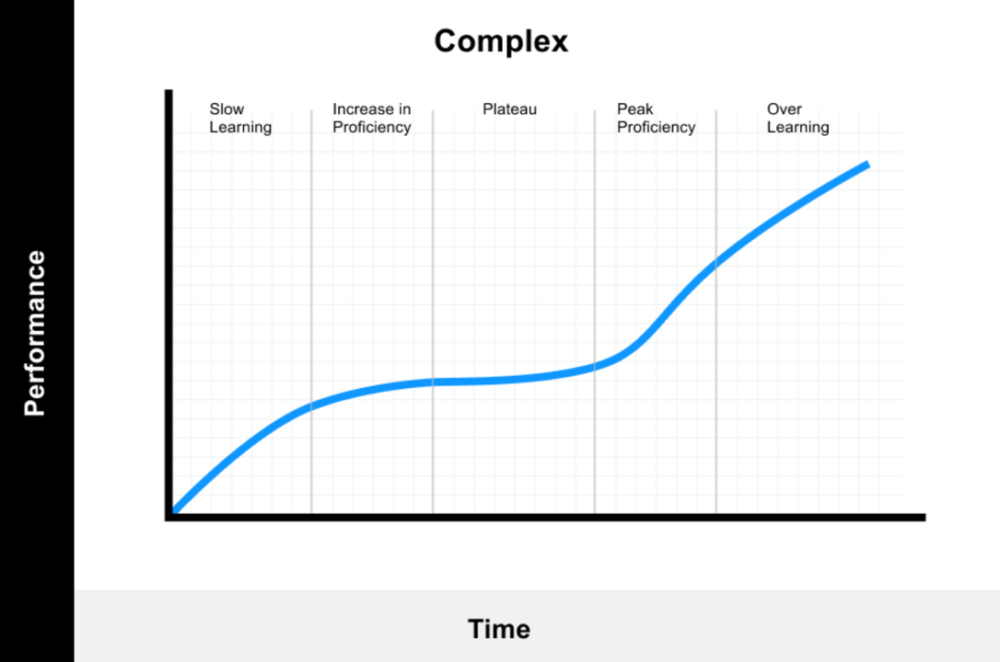
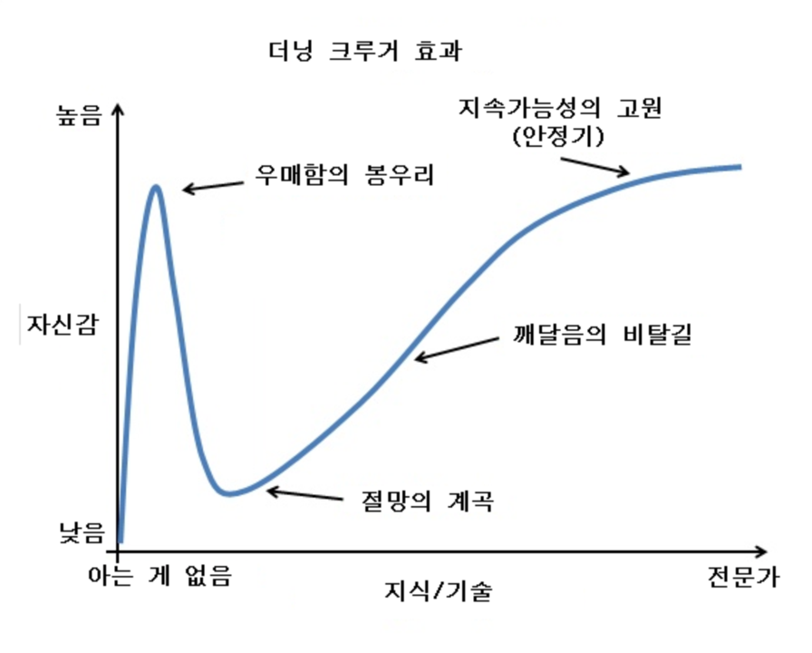

이론적으로 아래 이론을 근거했고, 상당 수의 내용이 “개인적인 학습관” 입니다.
- the Dips (Seth godin) - 자기 계발서
- learning-curve theory - 비즈니스 이론
- Dunning–Kruger effect - 심리학 이론
배움 곡선이론과 학습 설계:
학습 설계란:
건축 전 우리는 어떤 방식으로 만들고, 어떤 건축자재를 얼만큼 쓸 것인지 등을 설계합니다.
건축 전 설계를 해야 하는 이유는 무한이 아닌 한정된 시간과, 무한이 아닌 한정된 건축자재
를 가지고 건물을 만들기 때문입니다. 학습에서도, 우리는 한정된 시간과 한정된 뇌 용량을
가지고 있습니다. 한정된 자원을 이용하기 위해선 학습 전 올바른 학습 설계가 필수적입니다.
더해서, 우리가 학습을 하는 근본 이유는 이 세계에서 경쟁 하는 프로가 되기 위함입니다.
프로와 아마추어의 차이점은 아래의 예에서 관찰 할 수 있습니다.
한 프로리그 감독이 “야구에서 프로와 아마추어의 차이는 무엇이라고 생각하느냐?”라는 질문에
“프로는 달리기, 송구, 수비를 어느 정도하고 배팅을 잘한다. 반면, 아마추어는 배팅만 잘한다.”
라고 답 한 적 있습니다. 이는 야구 뿐 아니라 모든 영역에서 해당되는 말이라고 생각합니다.
우리가 이 컴퓨터 과학 종사자로 살아간다면, 한 두개의 분야에서는 특출나게 잘해야 합니다.
그렇다고 필요한 모든 부분에서 다 완벽해지기는 물리적으로 힘듭니다. 그러나, 각 부분들이
이 일을 할 때 방해가 되지 않을 정도의 수준까지는 학습하고 훈련해야 합니다.
요약하면, 프로가 되기 위한 학습 설계에서 중요한 점은 다음 세 가지 입니다.
- 일단, 우리는 한 두 개의 영역에서는 누구보다 잘해야 합니다.
- 그러나, 우리는 절대 모든 걸 완벽하게 할 수 없습니다.
- 하지만, 우리가 필요한 부분에서는 평균 정도는 해야 합니다.
아래에서는 세부적인 학습설계가 아니라, 학습 설계의 요소들을을 제시하려고 합니다
아래와 같은 요소를 고려하시고 스스로 맞는 학습 설계를 하고 결과를 만드셨으면 좋겠습니다.
경영자와 학습 설계:
우리는 한정된 시간과 한정된 뇌 용량을 분배하는 경영자의 입장으로 스스로를 봐야 합니다
내가 학습 해야 할 능력들은 무엇이 있는 지를 정확히 알고, 각각의 퍼포먼스를 측정하면서
냉정하게 어떤 능력을 얼만큼 훈련할 지 계획하고, 시간과 집중력을 투자해야 합니다.
이와 관련해서 The dips의 저자 Seth godin은 아래와 같이 말했습니다.
- Winner는 적당한 타이밍에 적당한 것을 끊을 줄 알아야 한다.
- 모든 걸 잘해야 성공한다는 건 가장 잘못된 믿음 중 하나이다.
- 평균 수준일 때 우리는 그만 둘건지, 특출난 수준으로 키울 건지 정해야 한다.
- 우리는 무엇이든 겪을 고통의 크기와 그 후 얻을 이익을 비교하며 결정 해야한다.
이 때 시간과 뇌 용량 분배에 있어서 감안해야 할 지표는 크게 두 가지 입니다.
전체적인 시간과 노력대비 학습의 퍼포먼스와 학습에 있어서의 인지부조화입니다.
이 두 가지 지표에 관한 것은 아래에 이어 설명하겠습니다.
학습의 퍼포먼스:
학습 자체가 어떻게 진행되는 지 알아야 경영자 입장에서 올바른 판단을 내릴 수 있습니다.
그래야 현재 어느지점 까지 왔는지 측정과 판단하고 다음 계획을 세울 수 있기 때문입니다.
학습을 하고 학습의 퍼포먼스는 안타깝게도 y = ax 형태의 직선 그래프가 아닙니다.
대부분 사람의 학습 퍼포먼스는 Complex-learning-curve처럼 나타내게 됩니다.

※ 위 그래프는 Zero-based 상태의 사람을 기준으로 학습 퍼포먼스를 나타낸 것입니다.
※ 학습 분야의 난이도에 따라, 학습자의 배경지식에 따라 다른 그래프로 표현될 수 있습니다.
학습에서의 인지부조화:
인지 부조화가 중요한 이유는 경영자인 우리 인지력의 판단 자체가 틀릴 수 있기 때문입니다.
아무리 학습을 노력한다 해도 판단 자체가 틀려버리면, 비효율성이 생길 수 밖에 없습니다.
가장 경계해야할 인지부조화는 실제로는 아는게 없지만, 알고 있다고 착각하는 것입니다
이를 찰스 다윈은 “무지는 지식보다 더 확신을 가지게 한다” 라고 하였습니다.
이 인지부조화를 한 눈에 볼 수 있는 그래프는 아래와 같은 Dunning-Krugger effect 입니다.
